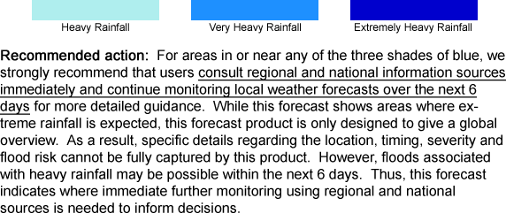
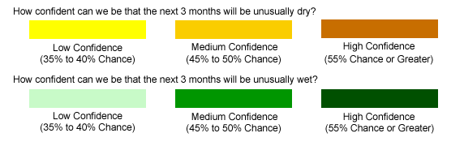

WWWinfo
%/map FORMknown
/mapsel FORMgetknown not { /defaultlayer } if
layerlist exch getknown {exec}
{layerlist /defaultlayer get exec} ifelse
/plotaxislength 550 psdef
/XOVY auto psdef
/antialias true psdef
figdup
/map
%Ingrid: /mystring getknown { } if
showmenu?
{inputimagelinkwithlimitcontrolsclickforinfo}
{imagelink } ifelse
/mapsel FORMknown not /mapsel FORMget (tot6dayapcppctle) eq /mapsel FORMget (defaultlayer) eq or or
{() print }
{
/mapsel FORMget (prcp_fcst) eq
{() print }
{
figdup .auxfig
imagelink
} ifelse
} ifelse
/tot6dayapcppctle stopprint /mapsel FORMgetknown {cvn eq} { pop true} ifelse {startprint} if
Where is unusually heavy rainfall expected?
This map shows areas where cumulative rainfall (or snow) over the next six days is expected to be unusually heavy.
The blue areas are where the total 6-day rainfall is expected to be unusually heavy. The darkest blue shading indicates areas expected to be exceptionally wet for this location.
This forecast shows rain over large areas only, and should not be used to forecast cyclone tracks, local rainfall, or as a flood forecast. The map does not distinguish areas where rainfall is expected from areas where snow is expected. Forecasts for the amount of snow are indicated in terms of the equivalent amount of rainfall, so the actual depth of snow would be considerably more than indicated. The forecast data are courtesy of the NOAA ESRL Reforecast project. (more information)
/tot6dayapcp descprintcondition
How much rain is expected cumulatively?
This map shows how much rain (or snow) is expected cumulatively over the next six days.
The blue areas indicate the cumulative amount of rain forecast for the 6-day period. The heaviest rainfall amounts are expected in areas that are colored in increasingly darker shades of blue, then red and violet. The start date for the 6-day period is located above the map. The map indicates only the cumulative amount of rainfall expected over the next six days, but does not indicate whether this amount is normal for the place and time of year.
This forecast shows rain over large areas only, and should not be used to forecast cyclone tracks, local rainfall, or as a flood forecast. The map does not distinguish areas where rainfall is expected from areas where snow is expected. Forecasts for the amount of snow are indicated in terms of the equivalent amount of rainfall, so the actual depth of snow would be considerably more than indicated. The forecast data are courtesy of the NOAA ESRL Reforecast project. (more information)
/tot6dayapcpanom descprintcondition
Where is it expected to be wetter than average?
This map shows if the cumulative rain expected over the next six days is more or less than average for a given place and time of year.
The blue areas are where total 6-day rainfall is forecast to be wetter compared to this same place and time in previous years (1979-2004). The brown areas are where the total 6-day rainfall is forecast to be dryer compared to this place and time in previous years. Areas in brown are not necessarily predicted to experience drought conditions. However, the map does not indicate the degree to which this variation is unusual for this particular location or time of year.
This forecast shows rain over large areas only, and should not be used to forecast cyclone tracks, local rainfall, or as a flood forecast. The map does not distinguish areas where rainfall is expected from areas where snow is expected. Forecasts for the amount of snow are indicated in terms of the equivalent amount of rainfall, so the actual depth of snow would be considerably more than indicated. The forecast data are courtesy of the NOAA ESRL Reforecast project. (more information)
/tot6dayapcppctmonthlyclim descprintcondition
How heavy is the rainfall expected to be?
This map shows areas where cumulative rainfall (or snow) over the next six days is expected to be unusually heavy for this time of the year.
The map shows how much of the rainfall that normally falls over an entire month is expected to fall in only the next six days. Areas that are expected to receive large proportions of a normal month's accumulated rainfall over the next 6 days are forecast to experience heavy rain. The darker the blue, the heavier the expected 6-day rain. The red and violet colors indicate where the cumulative rainfall expected over the next 6 days is likely to be 2 to 3 times (200%-300%) the average monthly rainfall for that location and time of year (compared to 1979-2004). Medium blue indicates where the total 6-day rain is expected to be 1 to 1-1/2 times (100%-150%) the average monthly rainfall for that location and time of year. Normal or less than normal rain is shown in white.
This forecast shows rain over large areas only, and should not be used to forecast cyclone tracks, local rainfall, or as a flood forecast. The map does not distinguish areas where rainfall is expected from areas where snow is expected. Forecasts for the amount of snow are indicated in terms of the equivalent amount of rainfall, so the actual depth of snow would be considerably more than indicated. The forecast data are courtesy of the NOAA ESRL Reforecast project. (more information)
/prcp_fcst descprintcondition
Are the next 3 months likely to be unusually wet or dry?
The map shows where and how likely it is to be unusually wet or dry over the next three months.
Green areas show where unusually wet conditions over the next three months are the most likely outcome. Darker green indicates a higher likelihood of unusually wet conditions. Brown areas show where unusually dry conditions over the next three months are the most likely outcome. The darker brown indicates a higher likelihood of unusually dry conditions. This map does NOT indicate how extreme the wet or dry conditions are expected to be.
This forecast shows only the likelihood of 3-month accumulated rainfall (or snow) being unusually high or low, and does not indicate chances of individual heavy rainfall events. The forecasts apply over large areas only, and should not be used to forecast local conditions, or as a flood forecast. (more information)
/extreme_prcp_fcst descprintcondition
Are the next 3 months likely to be exceptionally wet or dry?
The map shows where and how likely it is to be extremely wet or dry over the next three months.
Green areas show where there is an enhanced likelihood of extremely wet conditions over the next three months. Darker green indicates a higher likelihood of extremely wet conditions. Brown areas show where there is an enhanced likelihood of extremely dry conditions over the next three months. The darker brown indicates a higher likelihood of extremely dry conditions.
This forecast shows only the likelihood of 3-month accumulated rainfall (or snow) being unusually high or low, and does not indicate chances of individual heavy rainfall events. The forecasts apply over large areas only, and should not be used to forecast local conditions, or as a flood forecast. (more information)
/pic3mo_same descprintcondition
Is it likely that unusually wet or dry conditions will continue?
This map shows where and how likely recent wet or dry conditions will continue over the next 3 months.
Green areas indicate where the last 3 months have been unusually wet and where the coming 3 months are likely to continue to be unusually wet. Lighter green indicates a slightly enhanced chance and dark green indicates a greatly enhanced chance of unusually wet conditions continuing. Yellow and orange areas indicate where the last 3 months have been unusually dry and where the coming 3 months are likely to continue to be unusually dry. Yellow indicates where currently dry conditions have a slightly enhanced chance of continuing, and orange indicates where dry conditions have a greatly enhanced chance of continuing over the next 3 months.
This forecast shows only the likelihood of 3-month accumulated rainfall (or snow) being unusually high or low, and does not indicate chances of individual heavy rainfall events. The forecasts apply over large areas only, and should not be used to forecast local conditions, or as a flood forecast. (more information)
/pic3mo_reversed descprintcondition
Is it likely that unusually wet or dry conditions will end?
This map shows where current wet or dry conditions will likely end over the next 3 months.
Green areas indicate where it has been unusually dry over the last 3 months, and where unusually wet conditions are the most likely outcome over the coming 3 months. Yellow shows the reverse, where it has been unusually wet, and where unusually dry conditions are the most likely outcome over the coming 3 months.
This forecast shows only the likelihood of 3-month accumulated rainfall (or snow) being unusually high or low, and does not indicate chances of individual heavy rainfall events. The forecasts apply over large areas only, and should not be used to forecast local conditions, or as a flood forecast. (more information)
/CMAP_climo descprintcondition
How much rain normally falls at this time of year?
This map shows how much rain normally falls this time of year.
This map shows hom much rain usually falls during this month in past years (1979-2004). The darker the blue, the heavier the rain. This map does not indicate how much rain is expected this year.
The data are from the NOAA Climate Prediction Center's Merged Analysis of Precipitation (CMAP) data set. (more information)
/count descprintcondition
Are the areas at risk of heavy rainfall densely populated?
This map shows human population density.
Although this map does not include any rainfall information, it may be useful for assessing if areas at risk of heavy rainfall are densely populated.
The data are courtesy of the Center for International Earth Science Information Network (CIESIN), Socio-Economic Data Center (SEDAC). (more information)
/imr descprintcondition
Are the areas at risk of heavy rainfall inhabited by vulnerable populations?
This map shows the infant mortality rate, an indicator of poverty.
Although this map does not include any rainfall information, it may be useful for assessing if areas at risk of heavy rainfall are inhabited by vulnerable populations.
The data are courtesy of the Center for International Earth Science Information Network (CIESIN), Socio-Economic Data Center (SEDAC). (more information)
startprint
|